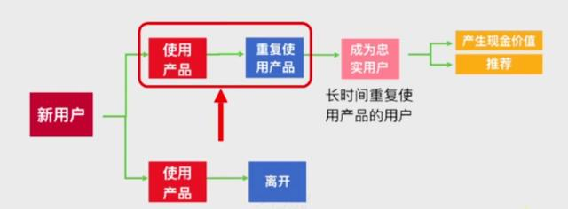
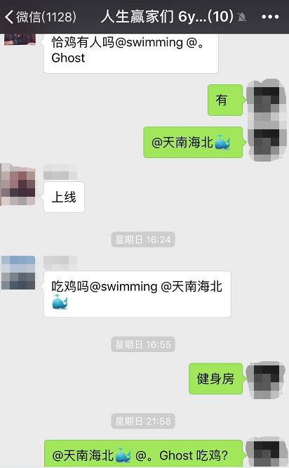
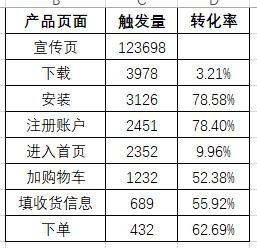
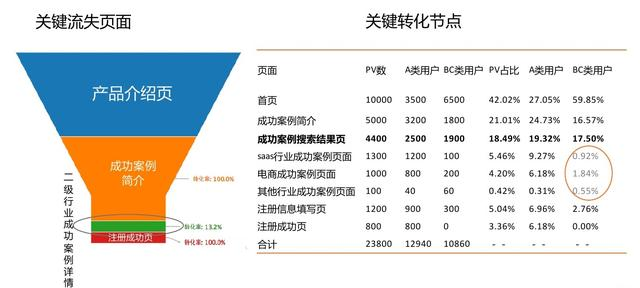
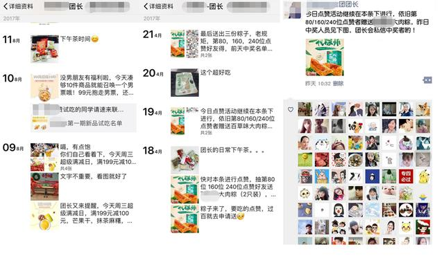

为什么哈佛商学院说，用户留存率每提升5%，公司的盈利将提升25%-95%？
在前2篇文章中《裂变套路看似多，总结起来就一个》《裂变之后，如何做精细化的用户留存工作》，重点分享了裂变涨粉的底层逻辑和使用标签管理做用户留存的方法，这篇详细来谈谈如何系统性进行用户留存。
一. 留存为何如何重要？
获得一个新用户的费用要比维护老用户的成本高7倍，当用户留存率每提升5%，公司的盈利将提升25%-95%！
举个例子，现在许多公司都会在微信上投广点通广告，假如一次推广带来了100个用户，每个用户成本20元。根据公司数据显示，一个用户能带来80元的收入，现在的留存率在20%，那么这次你的净利润为：80*100*20%-100*20=-400，如果你将留存率提升30%，即留存率达到26%，那么利润为80*100*26%-100*20=80，实现转亏损为盈利了。
无论是通过裂变还是投广告进来的新用户，对于你来说都有2种结果，离开或者成为忠实用户。而这其中有一个核心关键的动作影响用户是否能够重复使用产品。那就是用户首次使用你的产品时，能否让这位新用户体验到，你的产品是否对他的帮助、是否用得特别爽，然后才能重复使用你的产品，成为你的忠实用户。
下面从5个方面具体来谈谈如何提升留存率：
- 找到产品的“啊哈时刻”
- 设计hook模型
- 绘制用户路径图，创建转化漏斗报告
- 优化新用户体验
- 用户留存三个阶段
二. 找到产品“啊哈时刻”
美国有一家公司调研过他们的用户，为什么会离开？
- 30%的人，没有感受到产品价值
- 30%的人，不知道如何操作
- 10%的人，使用时有失败的体验
- 其他30%的人，兼容性差或者选择其他替代产品了
从这里看出，让用户第一次见到你产品时的感受是多么重要了。有太多的公司在产品宣传的时候，把自己的产品吹的天花乱坠，吸引了大量用户使用产品，但是在真正使用的过程中发现，此产品并没有说的那样好。这就是产品的价值与期望值管理没有做好，比如锤子科技的产品，发布会场场爆满，但是产品一直在被黑。
在肖恩《增长黑客低成本获取用户》中，有一个概念叫“Aha Moment”，翻译为“啊哈时刻”,就是用户在使用产品时体验到产品的爽点。这可能不单是指某一时刻，也可能是使用了某一功能，体验了某几个动作，真正体验到产品的价值。
让新用户体验到“Aha Moment”，这将是一个非常有价值的用户行为，这将决定用户是否会继续使用你的产品，对用户的留存起到了一个决定性作用。比如有很多分析国外的产品，如何使用增长黑客的方法获得产品爆发式增长的文章中有分析到，dropbox在注册后第二天重新返回使用；facebook的新用户在7天之内关注10个好友，完成这个动作，将会大大提升用户留存率。找到这个“Aha Moment”，再通过产品优化策略，促使用户完成这些核心动作，让产品实现爆发式增长。
如何找到“Aha Moment”？这是一个比较复杂的可以尝试从这3个维度去探索：
1. 你们产品的核心功能是什么？
因为通常你们产品的核心功能，就是产品希望用户去使用的关键操作。比如美颜相机让用户美化照片；听书软件希望用户在上面听到自己喜欢的书籍。具体根据自己的业务，了解到对用户和公司的核心价值，来判断你的产品核心功能是什么。
2. 用户的什么行为促使他们能够重复使用你的产品？
有时候你以为的核心功能或许并不是促使用户留下来的关键，这个时候就得跟留下来的用户进行深入沟通，究竟是因为什么让他们留下重复使用你的产品，然后去放大这个原因，吸引更多的人留下来。
3. 用试验和数据来验证你的猜想。
第二条中与用户深入沟通之后，所了解到的原因或许也并不一定是真的的原因，这时候你需要通过多次试验之后用数据来验证你的猜想是否正确
相信大家都玩过抖音吧，这大概是今年最火的APP之一了，进入APP后，几秒钟内就能让你体验到这款产品的“Aha Moment”：长相好看的的小哥哥、小姐姐；各种翻转剧情故事；无数生活小知识；好听的歌曲等等。各种小视频极具吸引力，让你刷完一条忍不住刷第二条，许多人一刷就是一两个小时，根本停不下来。
三. 设计hook模型
关于留存，《上瘾——让用户养成使用习惯的四大产品逻辑》这本书中，作者分享了一个hook模型：
- 第一步，触发。让新用户知道产品有这样或那样的功能，能帮助你解决某些问题，吸引用户进来了解详细信息
- 第二步，行动。当用户了解到产品或服务信息之后，对你信息产生兴趣，完成某些指定动作。
- 第三步，多样性反馈。对于完成某些指定动作后，给予多样性的反馈，激励用户继续使用产品。
- 第四步，投入。用户良好的实现了前三步操作后，才有可能继续投入到你的产品或服务上。
比如最近让我痴迷的《刺激战场》，上瘾到差点跟女朋友吵架。试着用hook模型来探究它是如何一步一步让我上瘾的。
一开始是在好友微信群中，有一些朋友整天在喊“组队了”“今晚吃鸡不”，时不时还讨论战局。触发了我下载了这款游戏，注册了账号，然后开始偷偷的玩了几把，居然把把吃鸡，特别开心，当时还在群里炫耀“吃鸡了”。这里从下载、注册、开始玩，非常顺畅的引导我进行下一步动作，直至真正开始玩起来。然后因为开始几局里面都是机器人，基本都是站在那让我打的情况，使得我成功“吃鸡”，给予我反馈，让我炫耀、兴奋。然后我投入了更多的时间玩这款游戏，最后上瘾了！
通过这四步：触发、行动、奖赏、付出，让用户发现你产品的真正价值，帮助用户完成“首次体验”和“重复使用”达到上瘾状态，让用户真正留存下来。
四. 绘制用户路径图，创建转化漏斗报告
设计完成hook模型后，把模型中的每个路径图绘制出来，并创建整个转化漏斗。在《精益数据分析》这本书中，有一个章节，作者画出了每一种商业模式中的用户路径图，然后只要将这个路径图中每一个环节的数据统计出来，然后记录每一个环节的转化率，找到当下环节中，转化最低的部分重点优化。
如上面某电商app的用户路径图，统计出每个页面的触发量，计算每个环节的转化率后，可以明显看到此APP宣传页需要优化，重点提升下载的转化率。
（图片来源growing io）
在公司开发资源紧缺的情况下，建议可以借助市场上其他第三方工具的漏斗功能，将每一个页面的链接配置进去，然后创建一个漏斗事件就可以统计到每一个页面数据，看到数据的转化大小。
一个优秀的运营需要学会不断借助工具，来提升自己的运营效率。
五. 优化新用户体验
很多人都在说，找对象的时候，第一印象非常重要；也有人说，找工作的时候，面试官对你的第一印象也很重要；对于你产品和服务，第一印象同样重要，这将影响到ta是否会使用你的产品。在产品初期，一定要将“新用户体验”当成一个独立的活动来运营，为“新用户体验”策划出一场独一无二的邂逅体验。转化率教父布莱恩·埃森伯格有一个转化三位一体概念，即新用户体验的第一个着陆页必须让用户完成三个任务：
- 传达产品/服务相关性
- 展示产品价值
- 提供明确的行为召唤
通俗点讲就是，第一眼见到你，我就得让你知道我是谁，我对于你的价值是什么，第一次见面后你需要干什么。
可以去多看看各种官网首页，几乎都遵循这一套原理，如果不是说明这不是一个优秀的首页。
比如我之前负责某零食电商的公众号及微商城运营，核心是让用户关注公众号并下单一次。在多次试验后发现，只要新关注用户领了公众号首次关注时推送的促销优惠券，和无门槛的新人优惠券后，那么他们会使用无门槛新人优惠券进行下单。于是立刻加大新关注时的优惠券金额（用更多张高门槛的优惠券组合），结果持续测试2周后，新关注用户的下单率果然有了明显的提升。同时不断优化新关注时推送的活动消息文案，让整个商城的销售额在2个月内翻了3倍。
六. 用户留存的三个阶段
在上一篇文章《裂变之后，如何做精细化的用户留存工作》有如何运用标签进行用户分层，实现精细化运营，提升用户留存率。具体如何做用户分层，之前的文章已经中已有说到，这里再补充下，用户留存将会分为三个阶段：
- 留存初期：找到“Aha Moment”，更好的激活用户
- 留存中期：让用户反复使用你的产品或服务，养成习惯
- 留存后期：扩展或提升产品功能或服务，使其产生更大的价值
还是举新媒体的例子，前百度副总裁李靖（李叫兽）的公众号，开始通过几篇不断刷新营销认知的文章引爆朋友圈，他的文章内容就是能让人产生了“Aha Moment”的感觉，吸了大量粉丝关注；然后在他的公众号中，每周四预告下周二分享的内容，让所有对营销感兴趣的人产生期待新的内容；最后单篇文章已经满足不了营销人，他们希望系统的跟李叫兽学习营销，于是他就开课，创造更大的价值，使李叫兽在短时间内获得大量粉丝。
这是我之前运营的公众号，每次发朋友圈内容都会好几百的评论点赞。
或许大家在运营微信个人号运营时，经常碰到的情况是朋友圈发了太多广告信息遭到屏蔽，试试这个小技巧，让用户舍不得屏蔽你也是如此。
首先把自己打造成一个与公司业务相关的企业员工角色，然后塑造成粉丝喜欢的形象，长得好看，喜欢玩还任性送礼物的，一言不合就在朋友圈点赞抽送礼物。
初期用一个活动诱饵让用户微信个人号，然后告知朋友圈不定期分享各自福利，动动手指点个赞即有机会获取，引导去参加第一个点赞活动。此时一般都会顺便看到你朋友圈各种有趣的内容和活动。（广告信息及时删除一些，只保留小部分）
中期做一些专题活动，定时定点宣传活动内容（比如店铺大促告知如何买最划算，哪些产品最好吃等等）并赠送一些福利，让用户记得随时关注我的朋友圈。
后期邀请粉丝一起来开发产品；新品免费试吃提供优化建议；一起设计包装等，让用户一起参与进来。使整个账号粘性极具提升。
总结
用户留存是一个比较宽泛的概念，不同产品、不同行业对于留存都有着不同的定义和逻辑指标。具体还得根据自己公司当下的现状、业务情况、团队情况来多维度进行分析，关注自己的同时建议多多关注行业内外其他产品，经常思考思考他们的留存指标究竟是什么？
当留存率提升上来后，才尽可能多的产生变现与推荐传播，这才是真正的用户增长！
本文从5个方面来聊了聊如何激活新用户，并促使反复使用。关于用户激活与留存是一个非常大的话题，希望大家在运营过程中，多多研究思考如何提升留存率，而不是一味的考虑如何做裂变，追求“虚荣指标”而野蛮增长。
商业的目的在于创造和留住顾客。——彼得·德鲁克
作者：swimming，微信公众号：增长头马
本文由 @swimming 原创发布于人人都是产品经理。未经许可，禁止转载
题图来自 Pexels，基于 CC0 协议


-
拥抱明天76451051 3天前 回复 0 
朵儿影视汁源共享 2天前 回复 0 -
爱吃水果的小毛孩 2天前 回复 0 -
谎言147778802 2天前 回复 4 
朵儿影视123 2天前 回复 0
查看更多评论干货分享一下，
你说名字，我都有噢
[来看我]
转发了
你说名字，我都有噢